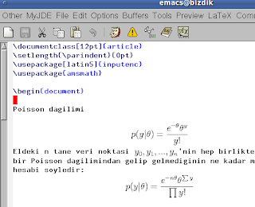

preview-latex
Emacs'de içinde LaTeX formlatlı matematik formülü olan herhangi bir dosyayı değiştirirken formüllerin görüntüsel, nihai halini görmek istersek, iki yöntem var.
Org Mode
Birincisi org-mode içinde (herhangi bir dosyada iken M-x org-mode
ile bu mod'a geçilir), ve sayfada org-preview-latex-fragment
işletilir. Bu formülleri aynı buffer içinde resmeder. Benim .emacs
ıcinde kullandığım ayarlar
(require 'org)
...
(global-set-key "\M-4" 'org-preview-latex-fragment)
...
(setq org-format-latex-options (plist-put org-format-latex-options :scale 1.3))
Böylece M-4 ile anında gösterim oluyor. Eğer metin haline geri
dönmek istersek C-c C-c ile bunu yapabiliriz.
Eger bazi ek LaTeX komutlarini dahil etmek istersek, bunu dosyanin en
basinda #+LaTeX_HEADER: ibaresinden sonra koyarak
yapabiliriz. Mesela yeni bir komut tanimlamak istedik, ve font seklini
degistirmek istedik,
#+LaTeX_HEADER: \newcommand{\ud}{\,\mathrm{d}}
#+LaTeX_HEADER: \newcommand{\mlabel}[1]{\quad \text{(#1)}\quad}
#+LaTeX_HEADER: \usepackage{palatino,eulervm}
#+LaTeX_HEADER: \usepackage{cancel}
TeX İçinde
Eger .tex dosyalarını edit ederken, matematik formüllü bölgelerinin
formülü grafik olarak göstermesini istiyorsak, preview-latex modu
kullanılabilir. Kurmak için Ubuntu üzerinde sudo apt-get install
preview-latex ; Bu çağrı Emacs ayarlarını otomatik olarak
yapar. Emacs'ı başlatınca .tex dosyası içindeyken menüde Preview
seçeneği görülecektir. Üstünde olduğunüz noktayı, ya da tüm dosyayı
grafiklettirmek yani preview yapmak mümkün. Bir tuş kombinasyonu
grafik bölgeyi tekrar düz tex haline döndürebiliyor, arada hızla gidip
gelinebiliyor.Eğer formüller ekran içinde ufak gözüküyorsa, imajları
büyütmenin yolu basit. Ayar dosyası .emacs icinde
(custom-set-variables
...'(preview-scale-function 1.2))
gibi bir kullanımla imajlar büyütülebilir. 1.2 formülleri "1.2 kat büyüt" anlamına geliyor. Diğer ayarlar
'(preview-auto-cache-preamble nil)
'(preview-image-type (quote dvipng))
